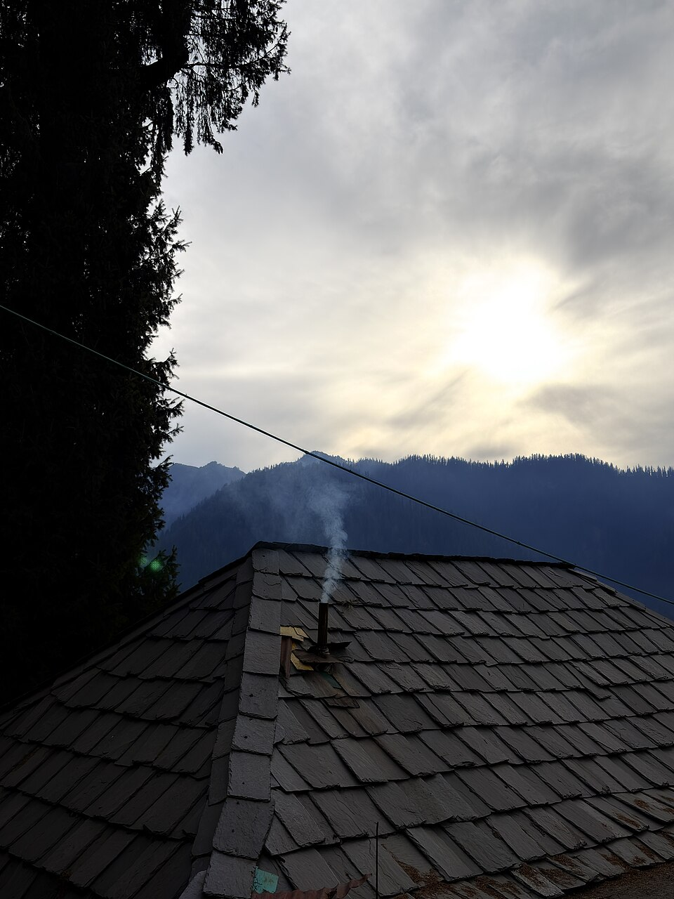
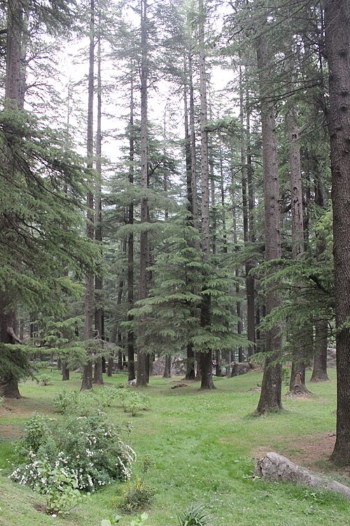

Three nights or six, river to ridge
One paid session a day on a light pace, two on an immersive one. The bases move once.
The two bases
A journey starts at one of them and moves at most once. Chamba town lies between.
-

The river base
H2O House stands on the Saal river below Chamba: five rustic huts built over the water and two sitting rooms. The host collects guests from the Chamba bus stand.
-

The walk in
The ridge is reached by road to Rota, then about 2 km on foot through deodar. Bags are carried up. With small children the journey stays at the river.
-

The ridge base
Mystic Village is a 200-year-old Gaddi village at Bhaloli, about 2,200 m up: five mud-and-slate houses and two handcrafted cottages, run by the village as a homestay.
The shapes a journey takes
A journey is built from the catalogue, not from a brochure. Pick the month, the pace and who is travelling, and the planner fills the days with what is bookable then.
On a light pace it holds one paid session a day, on an immersive one two. What it cannot fill, it leaves open and says why.